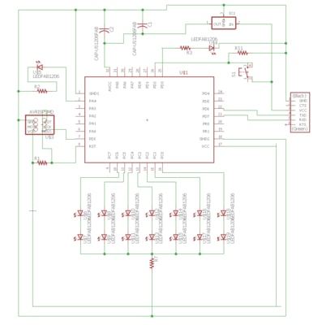
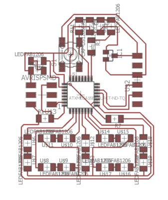
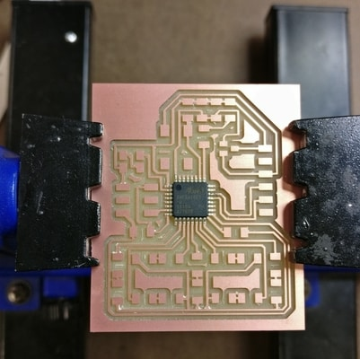
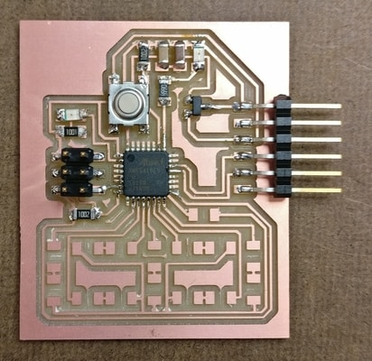
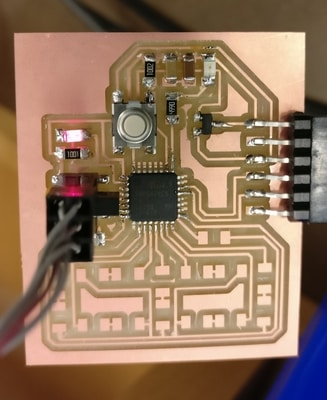

For week 5, I had made a board using an ATTINY44. For this week, I wanted to try using an ATXMEGA16E5. My initial goal was to try to program a tic-tac-toe board using LEDs and buttons. I couldn't quite figure out how to do this with 32 pins easily. I opted to make a digital number LED, the ones you see on digital clocks.
I followed the hello.ftdi.16E5 guide found here as a template and built on top of it. I used Autodesk Eagle. The fab.lbr actually didn't have the part for the ATXMEGA16E5-AURCT-ND. So making this part was a cool exercise. Basically, the dimensions look like the other 32 pin microcontrollers in the library but the pins are messed up. I referenced the manual to redesign the part for the ATXMEGA16E5.
On the top I added a button and an LED. On the buttom I added the 14 LEDs to make the 7 segments of a number.

Here are my files for the milling machine.
traces.png
outline.png
The only difficult part to soldering was the microcontroller. 32 pins with very small margins was tedious. (I actually had short between two pins on my first go).
Before proceeding with programming the number display, I first went through the hello.ftdi.16E5 guide. After adding the minimal parts, I tested the programming of the board with the given echo, blink, and ring programs.
 Everything went well, and I continued to solder everything else. The only tricky thing about the LEDs was to make sure that the LEDs were aligned correctly.
If you look closely, there is a solder bridge. I had put a resistor there. I would find out that the resistor was unnecessary and was able to give more brightness to the LEDs.
Programming the board was a lot of exploration. I worked on the template programs. My first goal was to be able to light up each number. My goal was to have the number increase as I changed the button. I couldn't quite figure this out. Instead, I was able to get the board to flip through the numbers. Here is a video.
Here is some code that works.
blink.numbers.c
blink.numbers.make
One LED flashes with the numbers. The other LED stays on. For some reason, the LED is only on when I press the button.
{kind=link}
{kind=link}